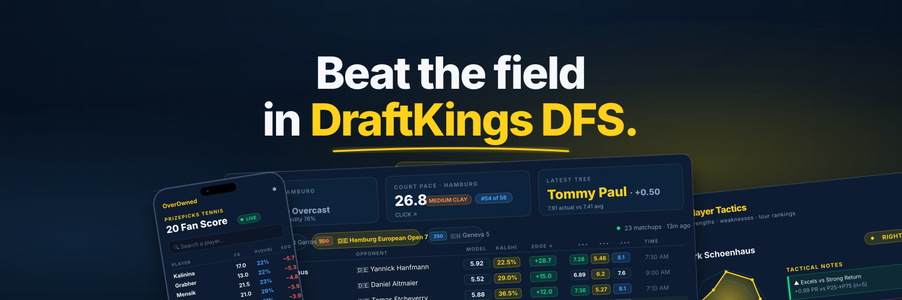

Rendered at exact 1500×500. To export a PNG: full-page screenshot this page (DevTools → Cmd/Ctrl+Shift+P → "Capture node screenshot" on the banner element), or right-click the SVG file in your folder and convert via any tool. Show Twitter avatar safe zone
1500×500
